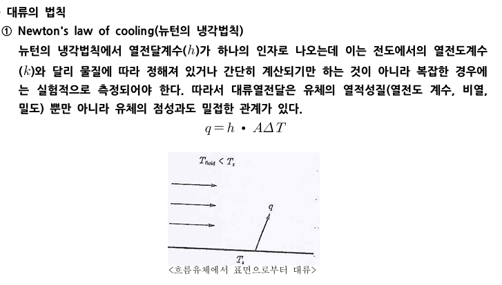
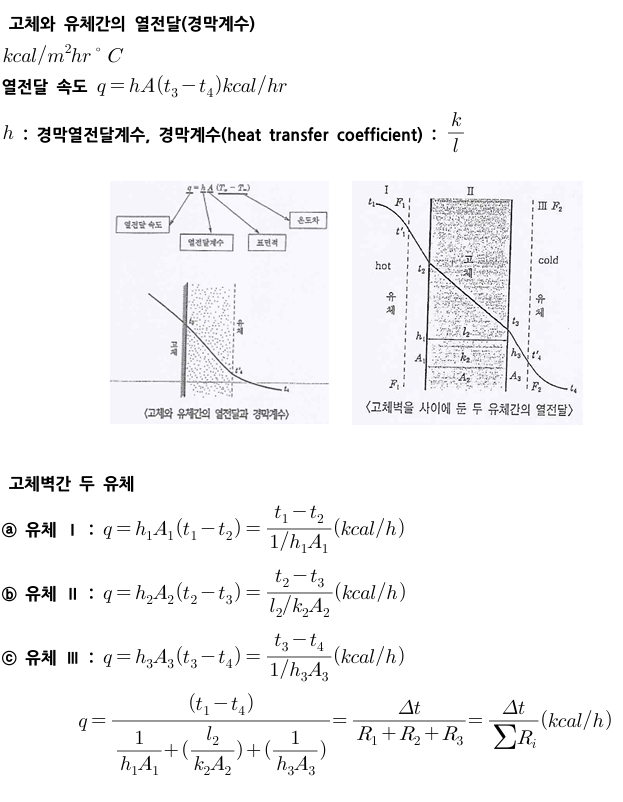
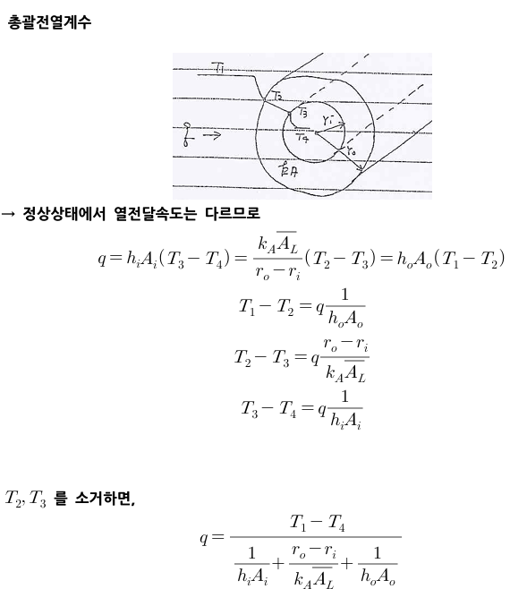
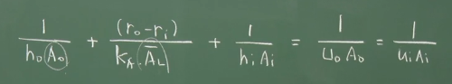
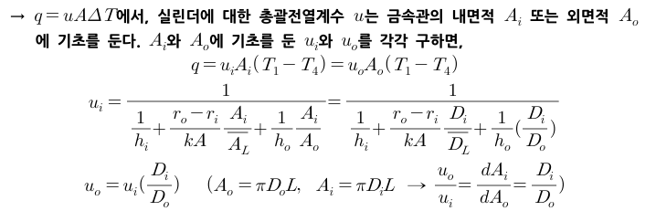
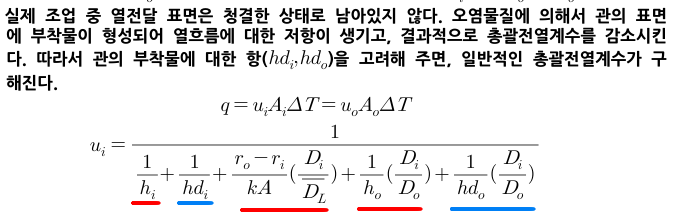
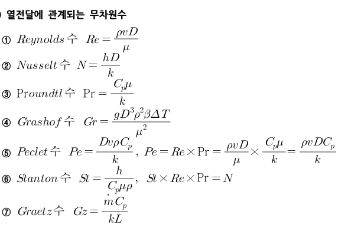

대류
대류는 고온의 유체 분자가 직접 이동하거나 밀도 차에 따른 혼합에 의하여 열전달이 일어나는 현상이다. 보통 강제대류와 자연대류로 구분된다.
대류는 뉴턴의 냉각법칙으로 설명이 된다.

이때 열전달계수 h는 실험적으로 측정한다. 전도에는 kst(또는 KAT/L)가 있었다면 대류에는 hAT가 있다. 하트라고 외운다.
이제 고체벽을 사이에 두고 두 유체사이에 열전달이을 알아보자. 이때는 대류와 전도가 동시에 일어나게 된다.

유체2는 오타이고, 고체2이다. 즉 유체1에서 고체2를 거쳐 유체3으로 가는 상황인 것이다.
다음으로 실린더 내부의 대류 상황을 살펴보며 총괄전열계수라는 개념을 알아보도록 하자.

실린더 외부 유체의 대류 -> 실린더의 전도 -> 내부 유체의 대류 사이의 열전달 식을 유도하면 q는 위와 같이 유도된다. 이때 전도와 대류를 모두 합쳐 uA△T의 형태로 나타낼 수 있으므로, 이 형태로 바꿔보도록 하자.
전도: (K/L) A △T
대류: h A △T
전도+대류: u A △T
이때 u를 대류와 전도를 묶어 나타낼 수 있다고 해서 총괄전열계수라고 한다.

이때 A에는 내부 면적 Ai가 있고 외부면적 Ao가 있다보니, 무엇을 기준으로 하냐에 따라 총괄전열계수 u도 미세하게 변한다.

그러나 이 값은 이상적인 청결한 파이프인 경우 총괄전열 계수이고 실제로는 다음처럼 파란색 보정항이 추가되어 나타나게 된다.

마지막으로, 대류의 경막계수 h를 계산하는데 필요한, 열전달에 자주 쓰이는 무차원수 몇가지를 보도록 하자.
